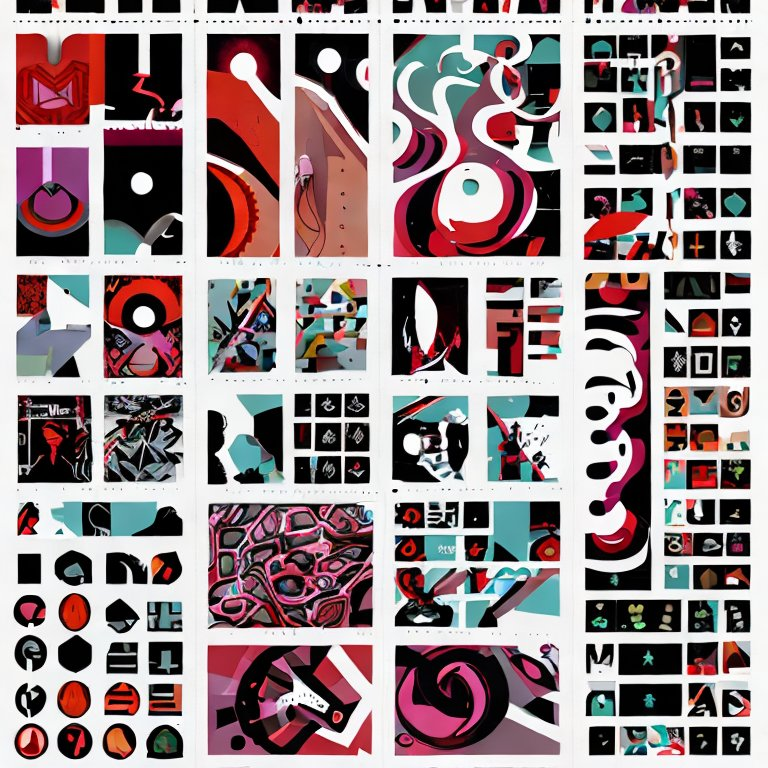
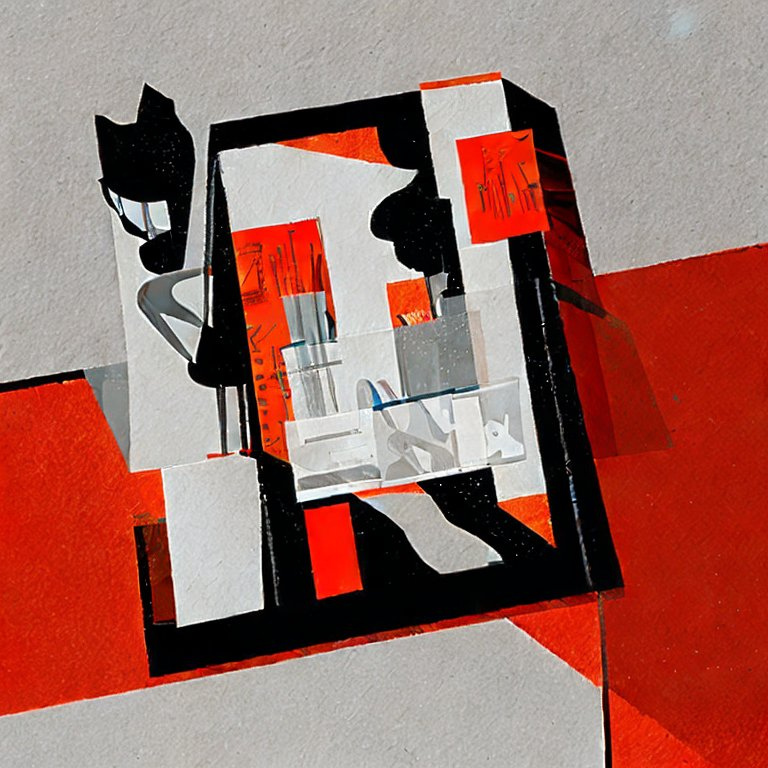
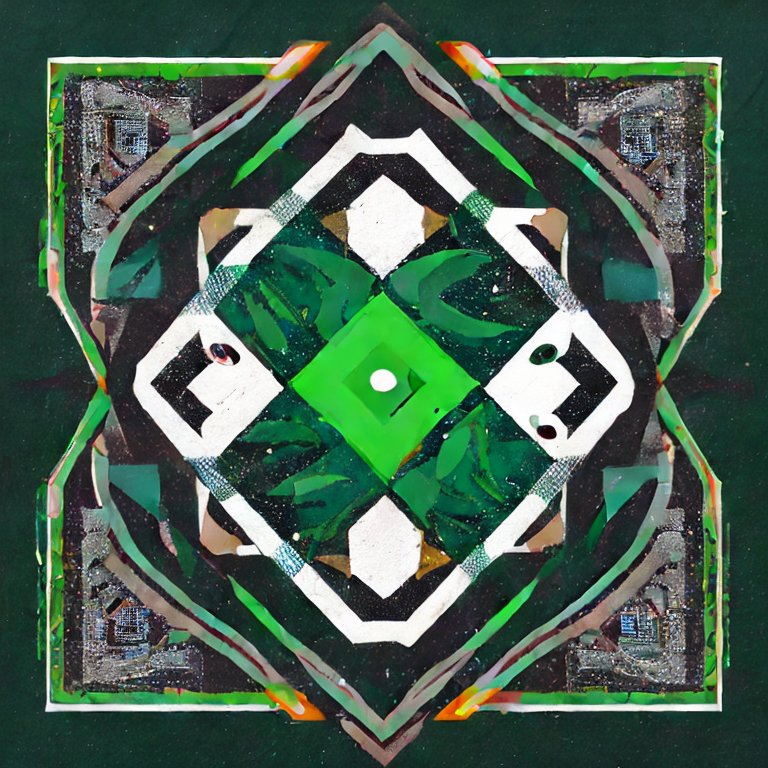
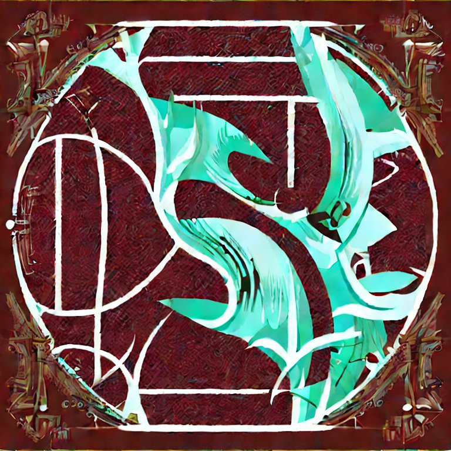
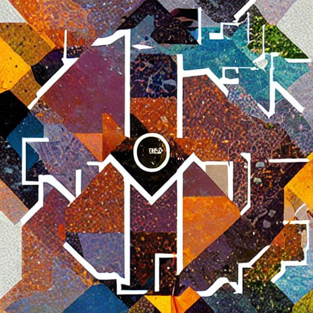

1. Pyrope
The mineral pyrope is a member of the garnet group. Pyrope is the only member of the garnet family to always display red colouration in natural samples, and it is from this characteristic that it gets its name: from the Greek words for fire and eye. Despite being less common than most garnets, it is a widely used gemstone with numerous alternative names.

3. Spessartine
Spessartine is a nesosilicate, manganese aluminium garnet species. This mineral is sometimes mistakenly referred to as spessartite. Gems with high spessartine content tend toward a light orange hue, while almandine prevalence induces red or brownish hues.

5. Uvarovite
Uvarovite is a chromium-bearing garnet group species. It is classified in the ugrandite group alongside the other calcium-bearing garnets andradite and grossular. Uvarovite is the rarest of the common members of the garnet group, and is the only consistently green garnet species, with an emerald-green color. It occurs as well-formed fine-sized crystals.

2. Almandine
Almandine is an iron alumina garnet, of deep red color, inclining to purple. It is frequently cut with a convex face, or en cabochon, and is then known as carbuncle. Viewed through the spectroscope in a strong light, it generally shows three characteristic absorption bands.

4. Grossular
Grossular is a calcium-aluminium species of the garnet group of minerals. The name grossular is derived from the botanical name for the gooseberry, grossularia, in reference to the green garnet of this composition that is found in Siberia. Other shades include cinnamon brown (cinnamon stone variety), red, and yellow. Grossular is a gemstone.


6. Andradite
Andradite is a mineral species of the garnet group and includes three varieties: Melanite - black in color due to limited substitution of titanium for iron, Demantoid - vivid green in color, one of the most valuable and rare stones in the gemological world, Topazolite - yellow-green in color and sometimes of high enough quality to be cut into a faceted gemstone, it is rarer than demantoid.
